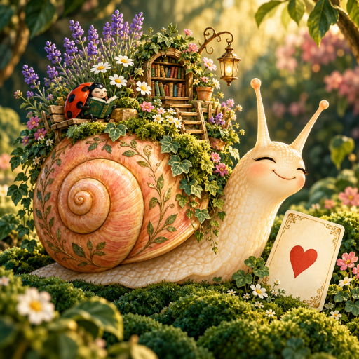

<- all projects

Snail Mail Solitaire
PC
Volume
Live
Take the scenic route.
Play solitaire on a snail's traveling garden. As you play, grow plants, welcome tiny passengers and collect gentle travel stories, one unhurried stop at a time. Build tableau columns downward in alternating colors, move aces to the four foundations and build each suit upward, remembering that only kings may fill an empty column. 160 curated Klondike deals, each completable in both draw-one and draw-three modes, take you through eight destinations, with free undo and a butterfly move guide. Grow 40 potted plants and welcome 12 passengers to your shell garden.